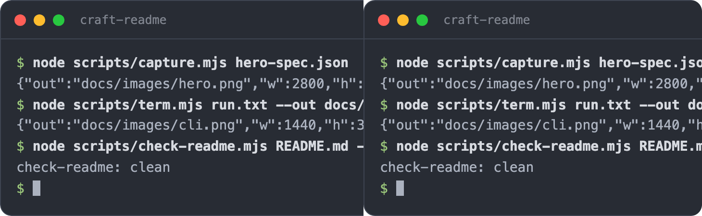
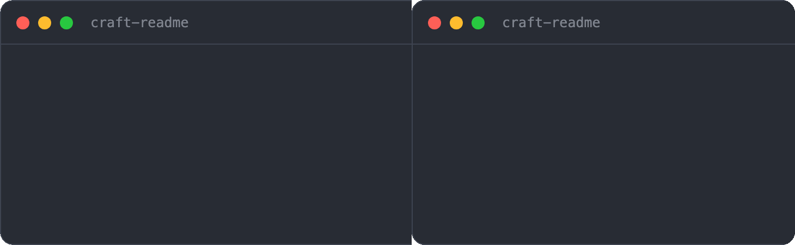
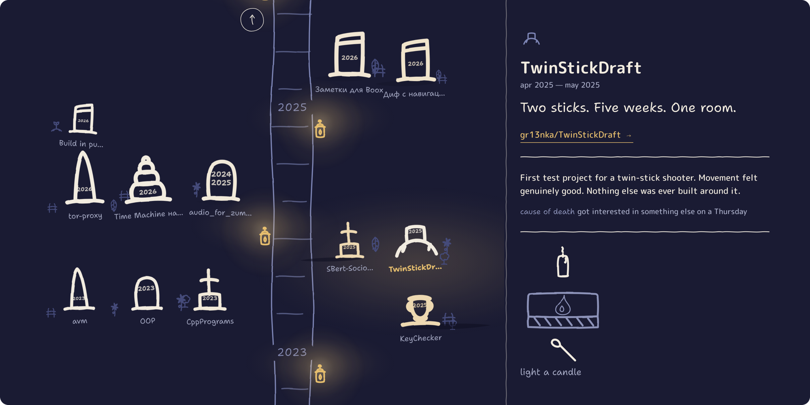

craft-readme
Nobody reads the wall of text. Show them the thing.
craft-readme is a Claude Code skill that rebuilds a README as a landing page and takes the screenshots itself.



Most READMEs are the same wall of text. Setup steps, an options table nobody opens, not one picture of the thing running.
craft-readme cuts it down to a landing page: a screenshot, a short GIF, a quick start. The reference goes in a guide behind a link.
What it does

The options and schemas move to docs/GUIDE.md . A hero shot and a GIF go in, captured over headless Chromium with the corners cut out so they sit on either GitHub theme. The full pipeline →
Use it with your agent
In Claude Code, from the project you want a README for:
/craft-readme
It reads the repo, picks the shots, takes them, writes the README and the guide, checks the links and images, and stops. You commit.
Install
Clone it where Claude Code keeps skills:
git clone https://github.com/gr13nka/craft-readme ~/.claude/skills/craft-readme
Node 22+ and any Chromium browser. No npm install , there's nothing to install.
Run the scripts directly
The tools work on their own, without the skill:
node scripts/capture.mjs spec.json # web page → rounded PNG, or GIF
node scripts/term.mjs run.txt --out cli.png --title app # a transcript → terminal card
node scripts/readme-shot.mjs README.md --out readme.png # a README → how GitHub shows it
node scripts/check-readme.mjs README.md --docs docs # dead links, placeholders, budgets
node scripts/check-voice.mjs README.md # "seamlessly", emoji, the wink; lints to the README's register
node scripts/check-discovery.mjs README.md # description, topics, alt text, the social card
Example output
A README this made, rendered how GitHub shows it. Centred header, real badges, a hero and a GIF, the rest moved to a linked guide:

FAQ
Playwright? ffmpeg? Neither. Node 22 has a WebSocket, that's the dependency list. GIFs are encoded in plain Node.
Can it render my README before I push? Yes. It reads the local file. GitHub doesn't need to see it first.
My project has no screenshots. It makes them. Web pages get driven in a headless browser, CLIs get a terminal card, and anything else, you hand it one image and it rounds the corners.
Will it eat my docs? No. They move to docs/GUIDE.md word for word, and a check proves nothing dropped out.
Will it read like a bot wrote it? There's a check for that. Emoji, "seamlessly", "feel free to", "pro tip", the joke in parentheses all fail it. What passes is dry.
My project isn't a joke. Then the README won't be one. Three registers: plain, deadpan, quiet. Say which, or it picks from the project. The pick goes on line one.
Docs
The rest is in docs/GUIDE.md: install · the capture scripts · the checks · the voice · being found.
License
MIT. Fork it, rename it, ship it.